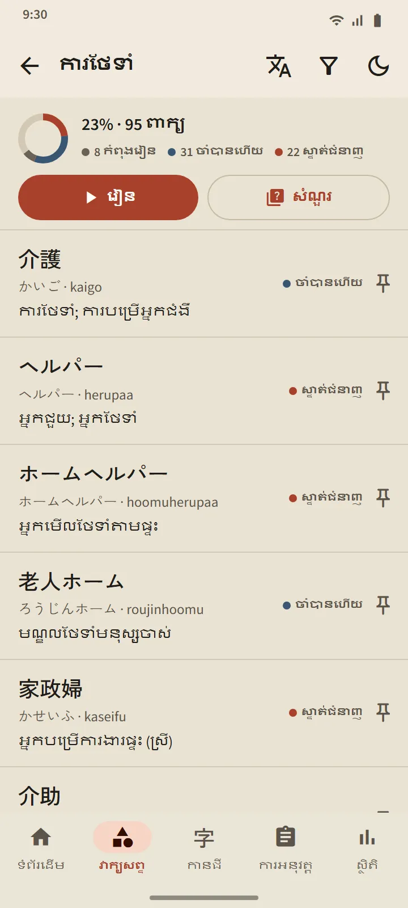

វាក្យសព្ទ
វាក្យសព្ទដែលចាំបានពិតៗ
កាតនីមួយៗត្រូវបានកំណត់ពេលដោយ FSRS ដែលជាក្បួនរំលឹកឡើងវិញតាមចន្លោះពេលបែបទំនើប។ អ្នកវាយតម្លៃខ្លួនឯង ហើយកម្មវិធីគណនាថាពេលណាពាក្យនោះនឹងត្រឡប់មកវិញ៖ ចន្លោះពេលបន្ទាប់ត្រូវបានបង្ហាញលើប៊ូតុងនីមួយៗ។ ពាក្យឡើងពី «ថ្មី» ទៅ «កំពុងរៀន» និង «ចាំបានហើយ» រហូតដល់ «ស្ទាត់ជំនាញ» ហើយដំណាក់កាលចុងក្រោយនេះអាចទៅដល់បានតែតាមរយៈសំណួរប៉ុណ្ណោះ។
- ប្រធានបទ 95 ក្នុង 11 ក្រុម។ ក្រុមកន្លែងធ្វើការមានប្រធានបទ 21 ចាប់ពីការណែនាំពីថ្នាក់លើ សុវត្ថិភាពការងារ កាលវិភាគ និងកិច្ចសន្យា រហូតដល់រោងចក្រ សំណង់ កសិកម្ម ភោជនីយដ្ឋាន សណ្ឋាគារ និងការថែទាំមនុស្សចាស់។
- មួយអេក្រង់សម្រាប់កញ្ចប់នីមួយៗ។ ភាគរយដែលបានបញ្ចប់ ស្ថានភាពរបស់ពាក្យនីមួយៗ ប៊ូតុង «រៀន» និង «សំណួរ»។
- វចនានុក្រមហោប៉ៅ 38,085 ពាក្យ។ ស្វែងរកតាមកានជី កាណា រ៉ូម៉ាជី ឬអត្ថន័យ។
